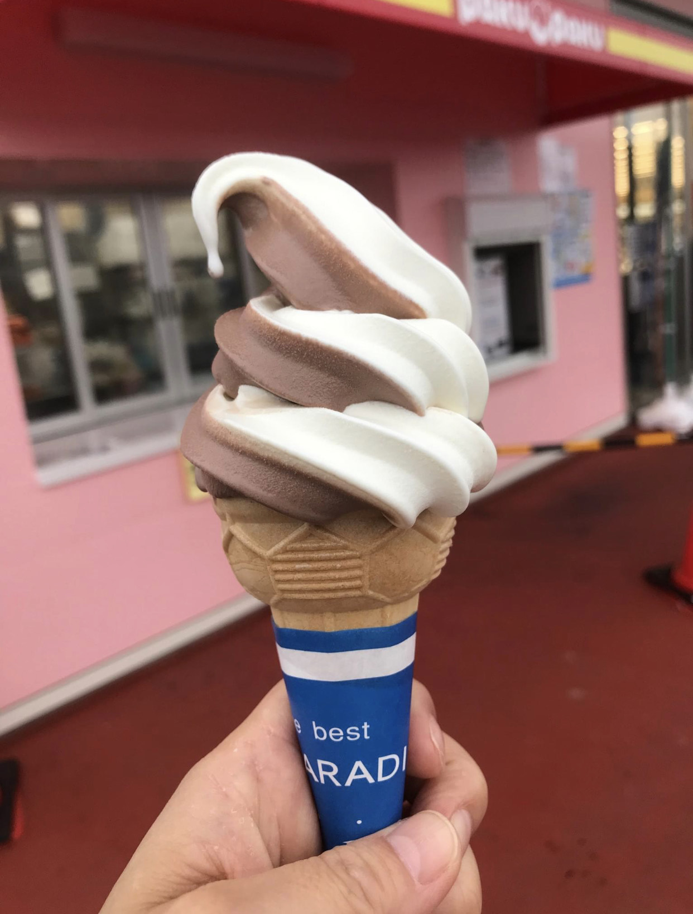
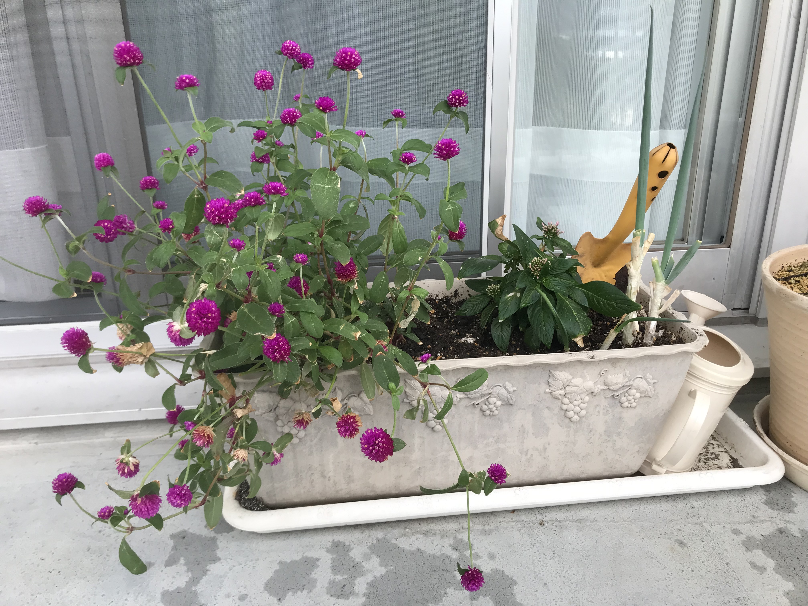
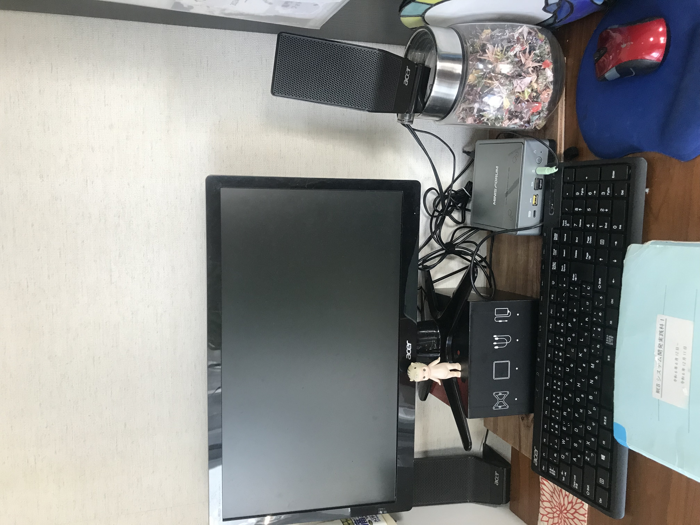

Blog
-
鳴門でハンバーガー

兵庫県から鳴門に越してこられたハンバーガー屋さんで久しぶりにおしゃれなものを食べました。コーラーの炭酸はやや弱め、オリジナル的な炭酸系は弱めのものが最近多いような気がします。こちらのお店のレジカウンターで売っているクッキーは可愛らしく美味しくでおすすめです。
-
QLIP投稿記事
Java入門編の授業が始まり、まだ1週間ですが徐々に思考が追いつかなくなってきています。先生はプログラミングとは何かについて、根本のとても大事な論理的思考（無意識に使っている莫大な選択肢からくる行動）について様々なパターンを例にあげて説明してくれます。自分が知っていることは相手も知っている前提で話をしがちな私の思考を変えていかないと難しいなと思いました。
写真はＰＡＫＵＰＡＫＵのソフトクリームです。学校の帰りに買い物で立ち寄るスーパー（ラ・ムー）で見つけ最近初めて食べました。100円という価格はマクドやＩＫＥＡ、コストコ並みのコスパの良さで驚きました。最近のお気に入りおやつです。 -
趣味はゴルフ

香川のゴルフ打ちっぱなしに行ってきました。夕暮れ時とてもきれいな景色、日本じゃないみたい。
9月からゴルフのグループレッスン１か月サブスク？レッスン受け放題題プラン）に通い始めました。徳島ではこのサブスクプランはまだ浸透されていないとのことです。 -
QLIP投稿記事
ITパスポートから始まり、Java、illustration、Photoshop、そしてhtmlにCSS。怒涛の3カ月でした。そして、figmaでワイヤーフレームとデザインカンプの作成方法を学び、今日からJavaScriptが始まりまりました。いつも最初はイケる！って思ってても途中で苦悩の日々になります。現在朝礼では自分のポートフォリオについての計画発表をしています。色んな人の考えや先生のアドバスを聞けるのは大変参考になります。
写真はベランダに置いているプランターです。花の横に再利用目的のネギ（3回目の再利用を狙っています）…お水をあげるたびにセンスのなさがあふれているこのプランターが自分の頭の中のような気がしてなりません。 自分のスキルを考えたらぞっとしますが、少しでもポートフォリオが形になるよう頑張りたいと思います。 -
初のワイヤーフレームにデザインカンプ
figmaでワイヤーフレーム習いましたが、自分のポートフォリオでは年間契約しているAdobeのxdでトライすることにしました。figmaは２日間でワイヤーフレームとデザインカンプを学び、xdはまさに独学です。時間がなくて少し触れただけですが使いこなせたら楽しいだろうなぁ。
-
QLIP投稿記事
6月から始まり、あっという間にPHPの最終コーナーです。相変わらず分かったようで分かってない日々ですが、今過去最高に自宅のパソコンに触れ、睡眠時間は過去２番目に短いです。
写真は自宅のパソコンと前回投稿した時のベランダのお花です。
パソコン机は折り畳みの簡易なもので狭くて使い勝手がとても悪かったので、苦肉の策でキッチン棚のリフォームで余った板を貼り面積を増やして強引に設置しました。受講する前、妹セレクトのハードディスクは購入して数年経つのにほぼ未使用な状態、セキュリティソフトも購入したものの導入していない状態でしたので、今パソコンは大活躍で喜んでいると思います。（私に）上手く使えてもらえず泣いているかもしれませんが…。
お花はお水をあげてるだけですが、すくすくと育っています。 残り２か月となりました。学べる環境に感謝し分からないなりにも最後まで頑張りたいと思います！